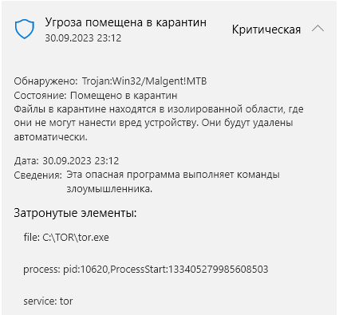

| Ник | Пост | Дата |
|---|---|---|
| LeonMskRu(Leon MskRu) |  | 2023-10-01T05:45:48.261Z |
| LeonMskRu(Leon MskRu) | это на Tor 0.4.7.15 (git-505ec7a64720e065)
при этом на альфу не реагирует вроде как | 2023-10-01T05:51:54.313Z |
| TOPER(TOPER) | Отправь ехешник в мокрософт на проверку, стопудово снимут детект из своей корявой поделки. Сто раз так уже делал. | 2023-10-01T08:58:08.741Z |
| welazsc |
Версию 0.4.7.15 тэгнули 18.09.2023. 32 битный exe | 2023-10-01T10:07:51.957Z |
| welazsc | Windows Defender отпустило, но теперь Google блокирует. Если бы не 32 бита, можно было подумать цензоры решли зайти с тыла. | 2023-10-02T09:40:04.413Z |
| tango |
| 2023-10-07T17:39:09.113Z |
| ValdikSS | 2023-10-07T22:41:47.928Z |